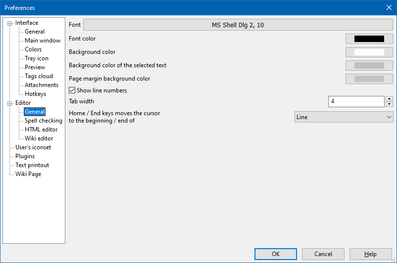
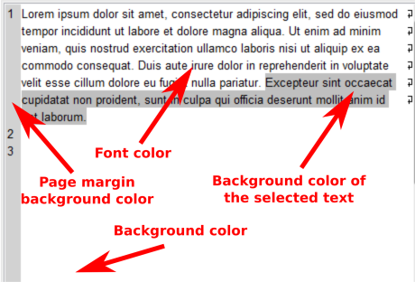

Editor - General

This section contains controls to modify behavior of the note content editor. Here one can set a font face and size (the Font button) as well as the following parameters: foreground colour for text and background colours for text, selected text and page margin. The following image illustrates how a note with tweaked colors looks like

The Show line numbers check-box allows to enable/disable display of the line numbers. Line numbers are shown on the left side of text.
The Tab width control allows to change the number of space characters corresponding to single tabulation character.
The Home / End keys moves the cursor to the beginning / end of... drop-down list allows to control the text editor response on hitting the "Home" ("End") key. When the key is hit the cursor jumps either to the beginning (end) of the current line or to the beginning (end) of the current paragraph.